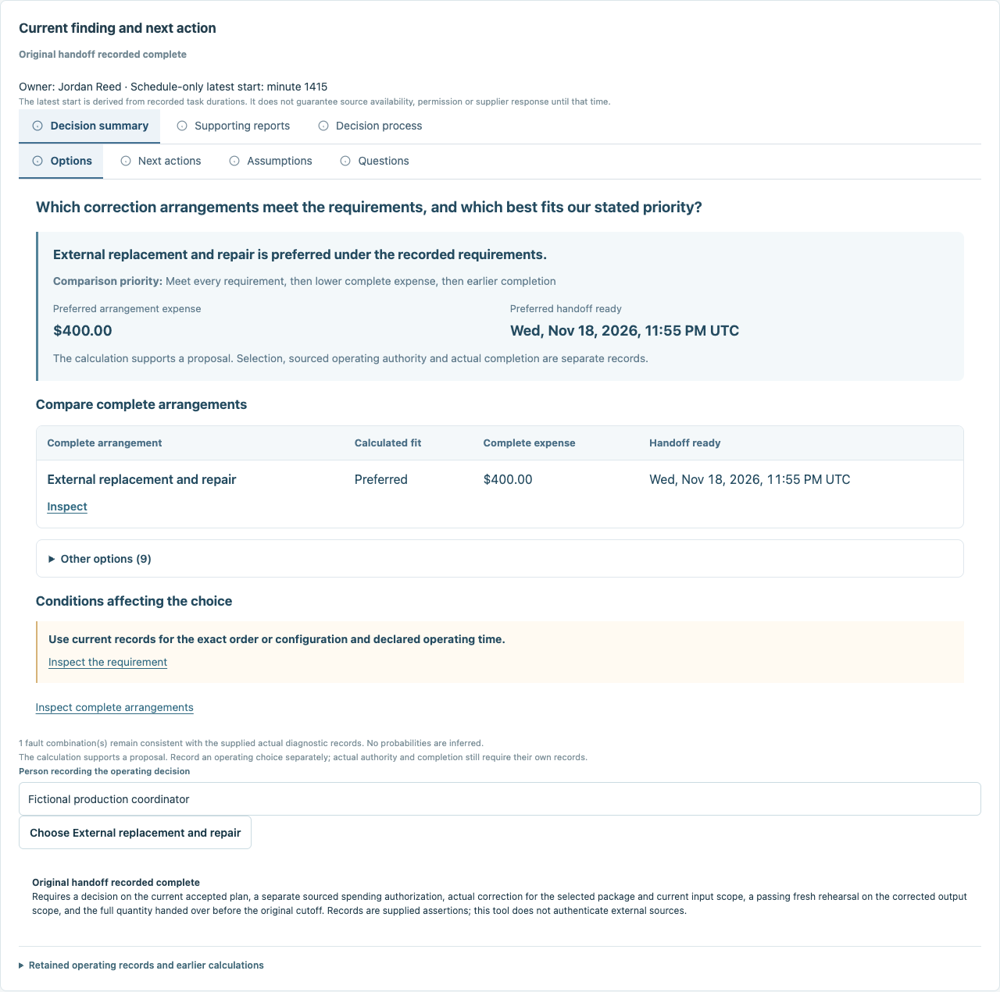
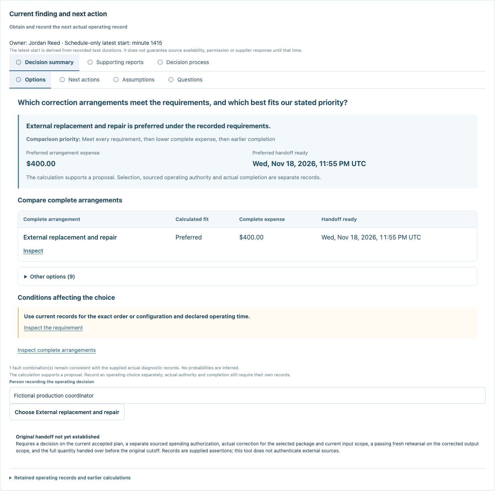

Leah can justify the urgent $400 external correction once its booking covers the current work. The complete plan finishes five minutes before the original cutoff. That is a basis for a proposal, but her promise concerns 120 usable kits actually handed over.
This chapter follows a separate worked campaign in the custom Gift-kit Handoff Desk. Its authored operating checks extend the calculation with records of what happened. These operating controls belong to the custom application; the generic Marketplace correction workflow in the preceding chapters does not provide them.
Keep the proposal and the work distinct.
The team could mark a task “done” after selecting the external package. That would obscure several different claims: who authorized spending, whether the supplier corrected every kit, whether the corrected journey passed a fresh test and whether the full quantity reached handoff on time.
In the worked GIFT-321 case, a supported external plan is retained as a separate operating choice. Source records then describe the actual sequence:
| Record | Supplied basis |
|---|---|
| Spending authorization | A sourced $400 authorization for the campaign and chosen response. |
| Actual correction | All 120 kits corrected from minute 1,410 to 1,420, with the original input scope and corrected output identified. |
| Fresh rehearsal | A passed ten-minute rehearsal of that corrected output, completed at 1,430. |
| Actual handoff | All 120 kits handed over at 1,435, linked to the correction and passed rehearsal. |
The corrected output uses insert-5, destination-3 and checkout-2. Its test must cover that output; an earlier test of the original configuration cannot supply the fresh rehearsal. A planned ten-minute rehearsal also cannot stand in for a recorded pass.
Establish what the linked records support.
The domain-authored check evaluates the chosen basis, quantities, scope, results and chronology against the original cutoff. With the supplied linked records, the desk reports Original handoff recorded complete.


That is a conclusion about these assertions under the authored rules. Recording them does not authenticate their sources, grant authority, perform the work or physically transfer kits. Leah's organization still needs reliable operating records and accountable execution.
A later failed test changes the current claim.
At minute 1,436, a later rehearsal report records failure on the same corrected output. The worked rule uses the latest complete rehearsal record, so the new failure supersedes the earlier positive result. Support for the original completion claim is withdrawn.


The kits were recorded as handed over at 1,435. A later calculation cannot undo that physical event. It changes what Leah can currently claim about satisfying the usable-kit promise and gives her a specific reason to investigate the output, the records and any necessary corrective action.
This is the role of a feedback loop: new operating evidence returns to a judgment whose basis has changed. The history remains available. A new correction would need its own fresh rehearsal and linked handoff; changing the deadline cannot rewrite the original commitment.
Leah can explain both the action and its limits.
She can distinguish a justified proposal from sourced authorization, actual work and recorded completion. When contrary evidence arrives, she can identify the claim that needs attention without erasing the earlier history or treating a recorded handoff as reversible.
The developer series explains how an application preserves that operating history. The business outcome here is narrower: a clear account of what supports the original promise, and when that support needs reassessment.